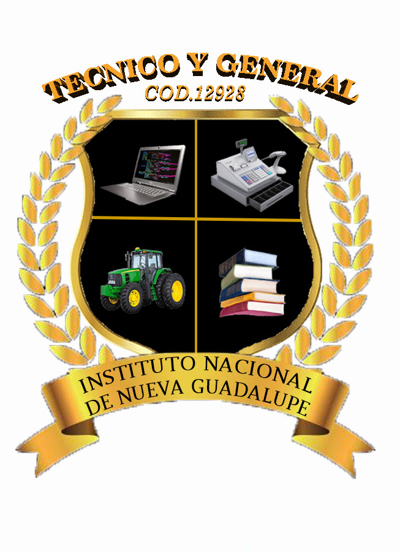

Objetivos Profesionales
Contribuir al desarrollo integral del educando, para un mejor desempeño en la sociedad.
Forjar en el alumnado, una moral productiva, a partir del uso de competencias obtenidas.
Inculcar en los alumnos, la práctica de los valores del centro educativo.
Operativizar contantemente nuestra planificación.
Profesionalizar el trabajo de la institución, para la elaboración y ejecución de los proyectos productivos.
Mejorar constantemente nuestro trabajo educativo, teniendo en cuenta el diagnóstico de la comunidad.